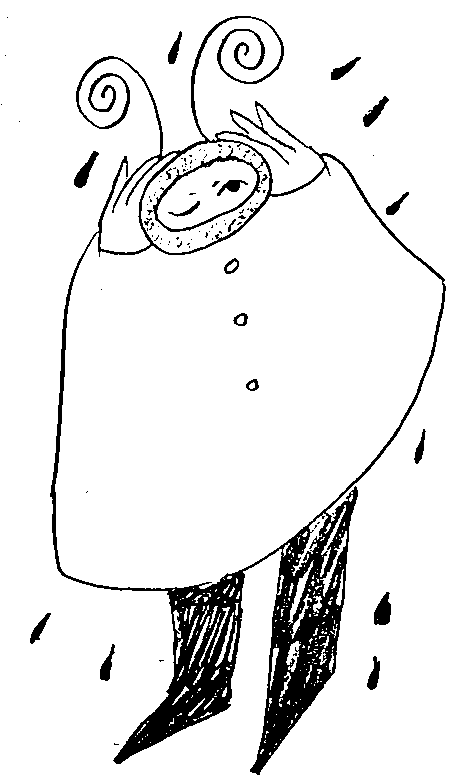
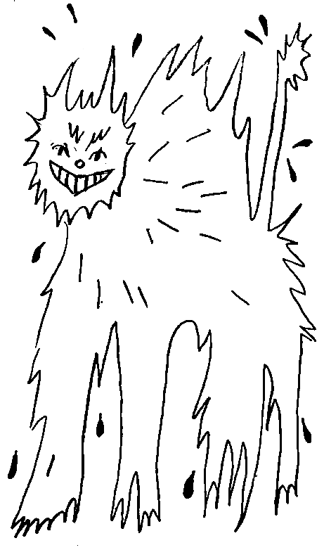

How to Bathe an Angry Cat With Minimal Damage
Bathing a cat that
hates
water can often result in scratches or bites, and a very stressed out and upset cat. To keep bathtime as stress-free as possible, it’s important to prepare ahead of time, and have an extra set of hands to help you out.
In a sink or bathtub, fill the bottom with a few inches of lukewarm water.
You don’t want the water to be cold, but you don’t want it to be too hot, either.
Lukewarm water will be the most comfortable for the cat, and won’t be too shocking or startling for it when you place the cat in the water.
Hold the cat by its scruff. When placing the cat in the tub, hold the cat gently by the scruff on the back of its neck.
Ask the friend helping you to gently hold the cat’s back end.
If the cat is especially angry, it will be especially important to keep it as still as you possibly can. However, you want to be as gentle as possible so you don’t injure or scare the cat.
Keep the door shut.
Wherever you’re bathing the cat, try to keep the cat contained in that space, in the event that the cat does
break loose from your grip
and
jump out
of the tub.
Apply shampoo gently. After you use a spray nozzle or cup to wet down the cat’s fur, apply the shampoo.
While your friend helps you hold the cat in place,
gently apply shampoo and
massage
it into its fur.
If your cat has very thick or long fur, you can dilute the shampoo to keep the cat’s fur from getting
too sudsy.
Try using one part shampoo with five parts water, then apply that diluted version to your cat’s fur.
Avoid getting water or shampoo on your cat’s face, or in its ears.
When wetting the cat down,
spray or pour water away from its face. Use the damp washcloth you have handy, instead, to gently wipe the cat’s face clean.
Rinse thoroughly from head to tail. Again, take care to keep soap and water away from your cat’s face when rinsing out the shampoo. Using your hand, gently push water and shampoo out of the cat’s fur in the direction of hair growth as you rinse.
This will help ensure you get all the suds out,
and will also help eliminate excess water from the cat’s fur as you rinse. It’s important you make sure to rinse out all the soap. Leftover residue from soap can irritate your cat’s skin, causing the cat to feel itchy and scratch at himself.
It can also be a bit sticky,
and make more dirt end up clinging to the cat’s fur even after it’s dry.
Wrap the cat in a big, dry towel.
Once you’ve thoroughly rinsed out all the shampoo, try to gently remove excess water by running your hand down the cat’s fur in the direction of hair growth.
Use your hand like a squeegee to help get rid of extra water.
Then, have your friend help you wrap up the cat in the towel you have ready.
Wrap
him
tightly, but not too tight.
Make sure
he
can breathe well, but that
he
can’t escape. Keep the cat wrapped up to allow its fur to dry as much as possible.
While the cat dries,
try to keep it in a room that is warm, without any cold drafts or breezes from fans or open windows.
If you want to try and use a blow dryer on the cat, make sure you keep it on its lowest heat setting. You won’t want to accidentally burn the cat’s sensitive skin.
For the most part, cats are very good at keeping themselves clean. You should really only need to bathe them if they get especially dirty, or if they have a condition that requires you to bathe them more often.
Use a damp washcloth to spot clean when necessary.
Instead of immediately putting your cat in the bathtub if you notice some dirt on its fur, simply use a dampened washcloth to wipe it away.
Not only will this prevent the
drama
that can sometimes come from trying to bathe a cat that doesn’t want to be bathed, it can also help prevent excess skin drying from bathing your cat too often.
Gather your materials. When trying to bathe an upset cat, it’s important you have everything ready before beginning.
the bath, so leaving him alone to go grab a supply you forgot will probably result in a
wet, soapy cat
running around
freely.
Before taking your cat to the bath, get your cat shampoo, towels, and a washcloth ready. Have these things handy beside the tub.
Consider placing a rubber bath mat on the floor of the sink or tub you will be bathing the cat in.
This can help the cat feel
sturdier
and keep the cat from
slipping
and
sliding
around.
Use only shampoo made specifically for cats.
Shampoo designed for humans is far too drying, and won’t be good for the cat.
Consider wearing a pair of rubber gloves to protect your hands from scratches.
Get a brush and your cat's nail clippers to groom the cat before the bath.
Trim the cat’s nails and brush out its fur. Prior to attempting to bathe the cat, make sure its nails are freshly trimmed. This will help prevent unwanted scratches when you do bathe the cat. Also before bathing, give the cat a thorough brushing. This will help remove any tangles in its fur, as well as any excess dirt or debris. You can also use a brushing session as a way to soothe and calm the cat before attempting to bathe it.
Avoid chasing or scaring the cat. It’s best to try and bathe your cat when it's at its most calm. If you startle the cat by grabbing at it or chasing it, you might find it’s even harder to get through the bath itself.
A soothing brushing session,
lots of petting and speaking softly
to the cat will help get the cat feeling more relaxed before you take it for its bath.
You can also try to tire the cat out before the bath
Ask a friend for help.
When it comes to bathing a
difficult
cat
Ask a friend or family member to lend some help with bathing the cat.
It helps if the person you ask is comfortable handling cats—
